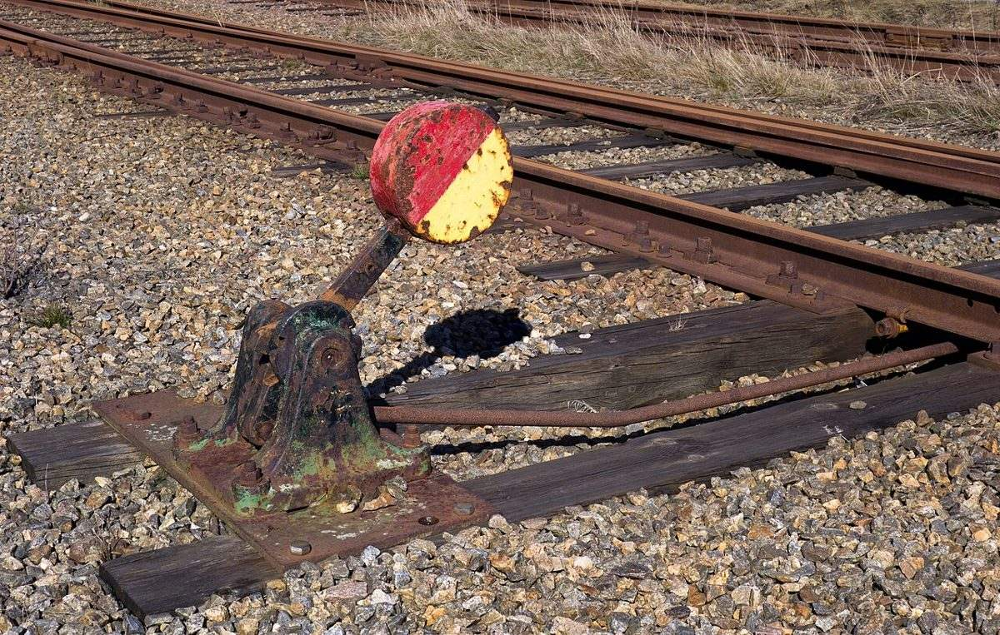

制作側の連想
壁スイッチを、分解図にしてみる
このサイトは、壁についているスイッチを、部品ごとに並べた図にしたつもりで作りました。六つの部位に番号をふり、図と並べています。制作側の連想で、お店の理念・由来とは無関係です。取り付けや配線の方法を示すものではありません(電気工事は有資格者の仕事です)。
凡例
六つの部位
- 1化粧プレート壁の面に見える、四角い板状のカバー。中ほどが窓のようにくり抜かれています。
- 2ロッカー押して切り替える、シーソーのように傾くボタン部分。
- 3表示灯小さなあかり。点くタイプも、ついていないタイプもあります。
- 4取付枠本体をしっかり支える、細長い金属の枠(ヨーク)。
- 5端子電線をつなぐための、ねじ付きの金属の接点部分。
- 6取付ねじプレートなどを留めておく、小さなねじ。
ギャラリー(イメージ)
コーヒーまわりの写真





写真はフリー素材のイメージです。お店のものではなく、お店で提供している内容を示すものではありません。
ご案内
お店のこと(確認できたものだけ)
| 所在地 | 〒510-8033 三重県四日市市下さざらい町4-16 |
|---|---|
| 電話 | 準備中 |
| 営業時間 | 準備中 |
| 定休日 | 準備中 |
| ご予約 | 準備中 |
| 駐車場 | 準備中 |
| SNS | Instagram @yokkaichi_factorycafe |